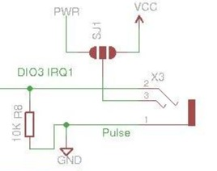

Hey Guys,
I have built my EmonTX and currently have it using 2 CT sensors for Solar. I now want to monitor and control my solar water heating. I will be using the the temperature sensor port, but want to know which other DIO are available and not in use in the emonTX that I could use, And Could I use the the pulse sensor as a DIO ? would I need to change anything on the PCB ?
Shot!
Re: Unused DIO ?
The Atmel processor on the emonTx has 20 i/o pins: 14 digital and 6 analog. Two of them (D0 & D1) are tied up with the Serial i/f, so that leaves 18 for general use.
Five of the digital pins, numbers 2 and 10 - 13, are used by the RFM12, and D4 is used by the temp sensor.
The Atmel has two digital pins which can be configured for interrupts: D2 which is used by the RFM12, and D3. D3 is pre-wired for use as a pulse counter but can be re-used for other purposes if desired, it being available at each of ports P1 - P4.
The five digital pins 5 - 9 inclusive are not reserved for anything and are therefore available for use. Connection may be made to them at Ports P1 to P4 and in the SPI/ISP zone.
The emonTx provides signal conditioning circuits for four of the analog channels: A2 for voltage, and A0, A2 and A3 for the three CTs. If not required for this purpose, these pins can be used for alternative purposes, via ports P1 - P4.
Analog pins 4 and 5 are unused on the emonTx, they being available in the 8-way port that's just above the FTDI programming header as SDA and SDK. To use them as digital pins, they need to be addressed as pins 14 -19.
The location of all i/o pins is nicely shown on the marked-up photo which Robert has added into my Mk2 PV Router build notes.
Hope this is of use!
Re: Unused DIO ?
Thanks for the respone.
With D3 being pre-wired for the pulse counter, I want to use this 3.5mm jack to supply the 5v,GND and IO to the relay, would I need to change the resistor in the zone or would it work as is with a sketch ?
Re: Unused DIO ?
From the Solderpad Schematic, the only resistor in the pulse-counter circuit is the 10K pulldown resistor, R8. If using D3 to drive a relay instead, I can't see this resistor being of any use to you, so it should be omitted.

If the current to drive your relay is only small, then you should be able to connect it directly between D3 and one of the power rails, all of which are available at the jack-socket. But if it takes more current than the processor can deliver, you may need to add a transistor stage to boost the signal.
Re: Unused DIO ?
Shot !,
If I am not mistaken the relay has a 2N2222 digital switch, and require 15ma-20ma to activate it, I will test though and see how it goes.